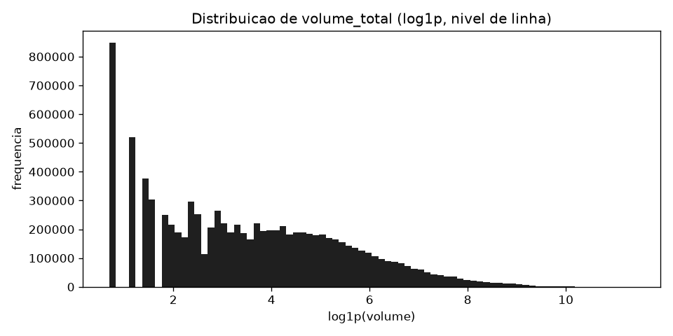
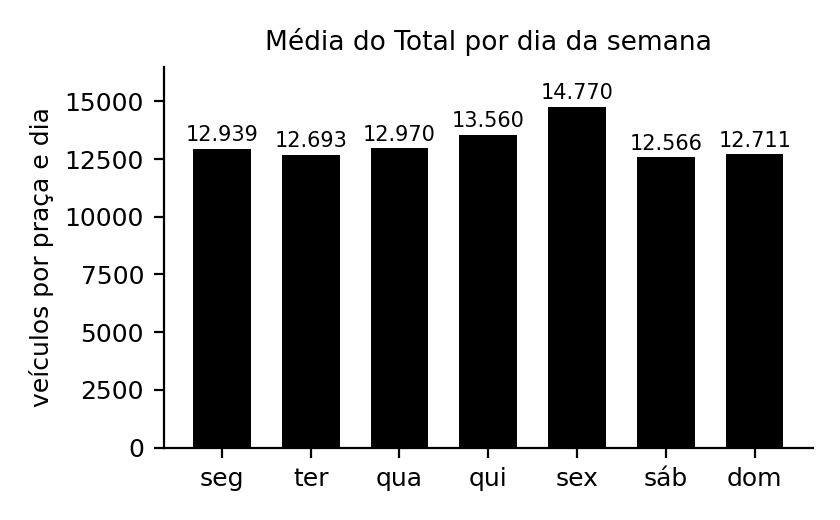
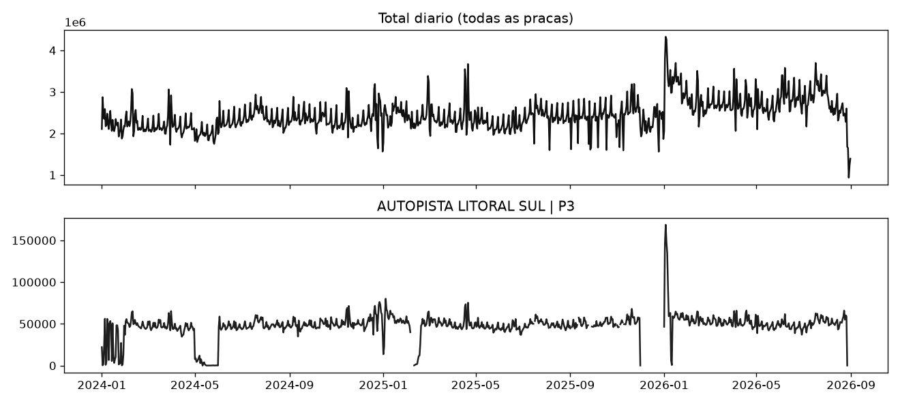
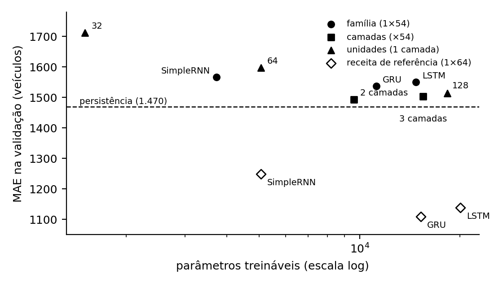
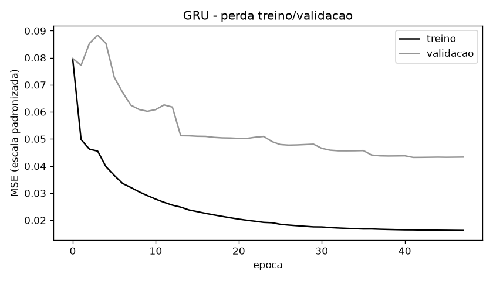

Instituto Federal de Goiás · Disciplina Deep Learning · Trabalho Prático
Relatório técnico · Frente 3.2 (Redes recorrentes) · Outubro de 2026
| Integrantes | Daniel Flavio · Guilherme Martins |
|---|---|
| Repositório (código) | https://github.com/danflavio/pracas-pedagio-dl |
| Conjunto de dados | ANTT · Volume de Tráfego nas Praças de Pedágio (Portal Brasileiro de Dados Abertos), arquivos diários de 2024, 2025 e 2026. Licença CC BY. https://dados.antt.gov.br/dataset/volume-trafego-praca-pedagio |
| Tarefa | Regressão em série temporal multivariada, previsão um passo à frente (t+1) |
As concessionárias de rodovias federais registram, por dia, quantos veículos passam em cada praça de pedágio. Prever esse volume com um dia de antecedência apoia o dimensionamento de cabines e equipes, a estimativa de arrecadação e o planejamento de feriados.
| Item | Valor |
|---|---|
| Período | 01/01/2024 a 31/08/2026 (974 dias) |
| Linhas | 9.184.154 (2024: 3.312.763 · 2025: 3.274.157 · 2026: 2.597.234) |
| Colunas (8) | concessionaria, praca, mes_ano (data), sentido, tipo_cobranca, categoria_eixo, tipo_de_veiculo, volume_total |
| Concessionárias / praças | 43 / 345 |
| Volume total | 2.379.466.795 veículos |
CSV com separador “;”, decimal “,” e codificação Latin-1. O hash SHA-256 de cada arquivo está em data_manifest.json.
| Aspecto | Achado | Tratamento |
|---|---|---|
| Granularidade | mes_ano, apesar do nome, é uma data diária (366, 365 e 243 datas distintas por ano). | Modelagem diária; alvo em t+1. |
| Ausentes | A ausência aparece como dias inteiros sem registro: entre as 303 praças usadas, 106 têm lacunas, somando 1.613 dias. | Janela aceita só se todos os dias (entrada e alvo) foram observados. Nada é interpolado. |
| Cobertura | Só 47 das 345 praças cobrem os 974 dias; mediana de 432 dias. | Modelo global (uma rede para todas as praças). Filtro de ≥ 180 dias: 303 praças. |
| Duplicados | 4.853 chaves repetidas (0,15%), todas em jan–mar/2025; nenhuma entre arquivos. | Volumes somados na agregação praça × dia. |
| Inconsistências | “Veículo Pequeno” só existe em 2024 (≈ 0% do volume). categoria_eixo mistura códigos e rótulos em 2025. | Categoria excluída; categoria_eixo agregada (não usada). |
| Anômalos | Critério 3 × IQR por praça: 3.751 dias (2,09%), 2,59% do volume. Os maiores são eventos reais (Réveillon na Autopista Litoral Sul, 2,4× o limite). | Mantidos: removê-los esconderia os dias mais difíceis de prever. |
No nível de linha, volume_total não tem zeros nem negativos (mínimo 1) e tem assimetria de 14,9, com cauda longa à direita (Fig. 1a). Agregado por praça e dia, o alvo tem média de ≈ 13,2 mil veículos e desvio-padrão de ≈ 12,2 mil no treino1. A dispersão vem sobretudo do porte das praças: algumas passam de 80 mil veículos/dia, bem acima da média. Há padrão semanal claro, com sexta-feira como o dia mais movimentado (Fig. 1b), e picos sazonais como o Réveillon e lacunas por início de operação (Fig. 2).
1 Desvio-padrão obtido de RMSE/√(1 − R²) da persistência no treino (RMSE 3.133; R² 0,934).


volume_total por linha, em escala log1p. (b) Média do alvo por dia da semana.
| Atributo | Tipo | Unidade | Origem |
|---|---|---|---|
| Passeio, Comercial, Moto | numérico contínuo | veículos/dia | soma de volume_total por tipo de veículo |
| Total | numérico contínuo | veículos/dia | soma dos três tipos (valor dos dias anteriores) |
| dow_0 … dow_6 | binário (one-hot) | – | dia da semana |
| mes_sin, mes_cos | contínuo em [−1, 1] | – | mês em codificação cíclica |
sentido, tipo_cobranca e categoria_eixo foram somados, pois o alvo é o total da praça. Identificadores de praça não entram como atributo: o modelo aprende só da dinâmica da série, o que permite aplicá-lo a praças novas. Vazamento: a janela contém apenas os dias t−W+1 a t; o total de t+1 nunca está na entrada, e o calendário é conhecido de antemão.
Com W = 30 e divisão cronológica: treino 105.754 × 30 × 13, validação 30.678 × 30 × 13, teste 27.467 × 30 × 13.
| Protocolo | Treino | Validação | Teste | Mede |
|---|---|---|---|---|
| Cronológico (data do alvo) | até 30/11/2025 | 01/12/2025 a 30/04/2026 | 01/05 a 31/08/2026 | o futuro de praças conhecidas |
| Por grupos (praças) | 70% das praças | 15% | 15% | praças nunca vistas |
Nada é embaralhado. O corte pela data do alvo garante que o alvo mais recente do treino é anterior ao mais antigo da validação, o que é verificado automaticamente em src/dataset.py. As praças são sorteadas com semente 42, de modo que nenhuma aparece em duas partições. A validação serve para early stopping, busca e escolha do modelo; o teste é usado uma única vez. Não houve validação cruzada (opcional), por custo.
Entrada (W × 13) → L camadas recorrentes [SimpleRNN | GRU | LSTM] com U unidades → Dense(1) linear
As três famílias usam a mesma estrutura e a mesma semente; muda só a célula. Nas L−1 primeiras camadas, return_sequences=True. Perda MSE no alvo padronizado; Adam ou RMSprop com clipnorm = 1,0 (contra gradiente explosivo); EarlyStopping na perda de validação (paciência 6, restaura os melhores pesos) e ReduceLROnPlateau (fator 0,5, paciência 3). TensorFlow/Keras, apenas CPU.
MAE é a métrica principal (erro médio em veículos/dia). RMSE pesa mais os erros grandes e foi a métrica otimizada na busca, coerente com a perda MSE. R² é complementar. Baselines obrigatórios: persistência (ŷt+1 = yt) e média móvel da janela. Custo: parâmetros treináveis, tempo de treino e tempo de inferência por previsão (lote de validação ÷ nº de janelas).
| Hiperparâmetro | Intervalo | Justificativa |
|---|---|---|
| Célula | SimpleRNN, GRU, LSTM | objeto da frente 3.2 |
| Janela W | 7, 14, 30 dias | uma semana, duas semanas e um mês: ciclos semanal e mensal |
| Unidades U | 32 a 128 (log) | largura; efeito multiplicativo no nº de parâmetros |
| Camadas L | 1, 2 | profundidade; 3 camadas avaliada à parte (Seção 5.3), por custo |
| Dropout | 0 a 0,3 | regularização leve; o conjunto tem mais de 100 mil janelas |
| Taxa de aprendizado | 10⁻⁴ a 5 × 10⁻³ (log) | faixa usual de Adam e RMSprop |
| Batch | 128, 256 | 64 descartado por custo: 21,1 s/época contra 10,2 s com 256 |
| Otimizador | Adam, RMSprop | os mais usados em redes recorrentes |
Configuração do estudo: Optuna com amostrador TPE (padrão) e MedianPruner (5 tentativas iniciais, 5 épocas de aquecimento); 15 tentativas; objetivo = minimizar o RMSE na validação; até 40 épocas com paciência 5. Por orçamento de CPU, cada tentativa treinou em 50% do treino (subamostragem sistemática, sem embaralhar), com a validação completa. Registro: results/optuna_trials.csv e results/optuna_resumo.json.
| # | Célula | W | U | L | Dropout | Taxa | Batch | Otim. | Épocas | Tempo (s) | RMSE |
|---|---|---|---|---|---|---|---|---|---|---|---|
| 12 | SimpleRNN | 30 | 54 | 1 | 0,10 | 1,4e-3 | 128 | RMSprop | 35 | 90 | 2.770 |
| 14 | SimpleRNN | 30 | 36 | 1 | 0,05 | 9,5e-4 | 128 | RMSprop | 28 | 54 | 2.774 |
| 1 | SimpleRNN | 7 | 65 | 2 | 0,10 | 2,7e-4 | 128 | Adam | 35 | 89 | 2.972 |
| 5 | GRU | 30 | 63 | 1 | 0,21 | 8,4e-4 | 128 | RMSprop | 27 | 181 | 3.502 |
| 0 | GRU | 14 | 43 | 2 | 0,08 | 1,7e-4 | 256 | RMSprop | 35 | 130 | 3.721 |
| 2 | SimpleRNN | 14 | 50 | 1 | 0,20 | 2,1e-3 | 128 | Adam | 9 | 18 | 3.835 |
| 4 | SimpleRNN | 7 | 103 | 2 | 0,24 | 3,2e-3 | 256 | RMSprop | 29 | 58 | 3.915 |
| 11 | GRU | 30 | 58 | 1 | 0,29 | 4,4e-4 | 128 | RMSprop | 5 | 33 | 4.266 |
| 3 | GRU | 14 | 45 | 2 | 0,20 | 4,0e-3 | 256 | Adam | 5 | 23 | 4.472 |
A vencedora da busca (tentativa 12), retreinada com o treino completo, teve MAE 1.566 e RMSE 2.725 na validação; a melhor variante derivada dela chegou a MAE 1.493. A configuração de referência usada no piloto (GRU, W = 30, 1 camada de 64 unidades, sem dropout, Adam com taxa 10⁻³, batch 64, até 60 épocas, paciência 6) teve MAE 1.108 e RMSE 2.539, melhor nas duas métricas. Ela foi adotada como modelo final, com escolha feita apenas na validação. A interpretação é que o orçamento da busca (15 tentativas, metade do treino, sem batch 64) foi pequeno demais para superar uma configuração padrão.
As Seções 5.1 a 5.3 fixam a receita da busca (U = 54, RMSprop, taxa 1,4 × 10⁻³, dropout 0,10, batch 128), treinam com o treino completo e variam um fator por vez. Os valores são comparáveis entre si. Persistência na validação: MAE 1.470, RMSE 3.101, R² 0,941.
| Receita | Célula | MAE | RMSE | R² | Parâmetros | Épocas | Treino (s) | s/época | ms/previsão |
|---|---|---|---|---|---|---|---|---|---|
| Busca (U = 54) | SimpleRNN | 1.566 | 2.725 | 0,955 | 3.727 | 31 | 170 | 5,5 | 0,11 |
| GRU | 1.537 | 2.702 | 0,955 | 11.233 | 43 | 546 | 12,7 | 0,14 | |
| LSTM | 1.550 | 2.747 | 0,954 | 14.743 | 34 | 428 | 12,6 | 0,15 | |
| Referência (U = 64) | SimpleRNN | 1.249 | 2.564 | 0,960 | 5.057 | 60 | 489 | 8,1 | – |
| GRU | 1.108 | 2.539 | 0,961 | 15.233 | 48 | 958 | 20,0 | – | |
| LSTM | 1.138 | 2.590 | 0,959 | 20.033 | 47 | 952 | 20,3 | – |
| Janela | MAE | RMSE | R² | Épocas | Treino (s) | ms/previsão |
|---|---|---|---|---|---|---|
| 7 dias | 1.559 | 3.061 | 0,944 | 43 | 140 | 0,056 |
| 14 dias | 1.579 | 3.020 | 0,945 | 50 | 179 | 0,058 |
| 30 dias | 1.566 | 2.725 | 0,955 | 31 | 158 | 0,111 |
A janela de 30 dias reduz o RMSE em 11% em relação à de 7 dias, com MAE praticamente igual: a informação do último mês diminui sobretudo os erros grandes (mudanças de nível e dias atípicos), o que indica dependência útil além do ciclo semanal. O custo de inferência dobra e o de treino quase não muda; não houve sinal de instabilidade ou de overfitting maior. Janelas mais longas não foram testadas, pois exigem mais dias consecutivos observados numa série descontínua. O horizonte é t+1, adequado ao planejamento diário.
| Variante | Parâmetros | MAE | RMSE | Épocas | Treino (s) | ms/previsão |
|---|---|---|---|---|---|---|
| 1 camada × 54 | 3.727 | 1.566 | 2.725 | 31 | 149 | 0,106 |
| 2 camadas × 54 | 9.613 | 1.493 | 2.604 | 50 | 454 | 0,137 |
| 3 camadas × 54 | 15.499 | 1.503 | 2.667 | 37 | 513 | 0,210 |
| 1 camada × 32 | 1.505 | 1.713 | 3.238 | 9 | 40 | 0,070 |
| 1 camada × 64 | 5.057 | 1.598 | 2.768 | 50 | 262 | 0,100 |
| 1 camada × 128 | 18.305 | 1.514 | 2.636 | 50 | 395 | 0,115 |
A segunda camada reduz o MAE em 4,7% com 2,6× os parâmetros e 3× o tempo de treino; a terceira não acrescenta. Em largura, de 32 para 128 unidades são 12× mais parâmetros para 12% de MAE, e de 64 para 128 são 3,6× para 5%: retorno decrescente. A variante de 32 unidades parou em 9 épocas, indício de subajuste. A Figura 3 resume custo × efetividade de todas as variantes.


Nas três famílias, a perda de treino cai rápido e a de validação oscila nas primeiras épocas, depois desce e estabiliza. A validação fica acima do treino o tempo todo (no fim, ≈ 0,044 contra 0,020 na SimpleRNN, 0,016 na GRU e 0,014 na LSTM). A distância cresce com a capacidade e indica overfitting leve, mas a validação não volta a subir, e o early stopping guarda os melhores pesos (GRU parou em 48 épocas, LSTM em 47). A SimpleRNN usou as 60 épocas e ainda melhorava devagar. As curvas das três estão em results/figures/.
Modelo final: GRU, W = 30, 1 × 64, 15.233 parâmetros. O teste foi usado uma única vez em cada protocolo, sem ajustes posteriores.
| Protocolo | Modelo | MAE | RMSE | R² | MAE vs. persistência |
|---|---|---|---|---|---|
| Cronológico | Persistência | 1.536 | 3.303 | 0,924 | – |
| Média móvel (30 dias) | 1.831 | 4.099 | 0,884 | +19% | |
| GRU final | 1.126 | 2.773 | 0,947 | −27% | |
| Por grupos (praças novas) | Persistência | 1.774 | 3.699 | 0,921 | – |
| Média móvel (30 dias) | 2.028 | 4.423 | 0,888 | +14% | |
| GRU final | 1.469 | 3.276 | 0,938 | −17% |
Limitações.
Conclusões.
Reprodutibilidade: ambiente em requirements.lock.txt; ordem de execução no README.md (download_data.py → preprocess.py → dataset.py → train.py → optuna_search.py → experimentos.py → avaliar_teste.py). Decisões sobre os dados em docs/decisoes_dados.md.